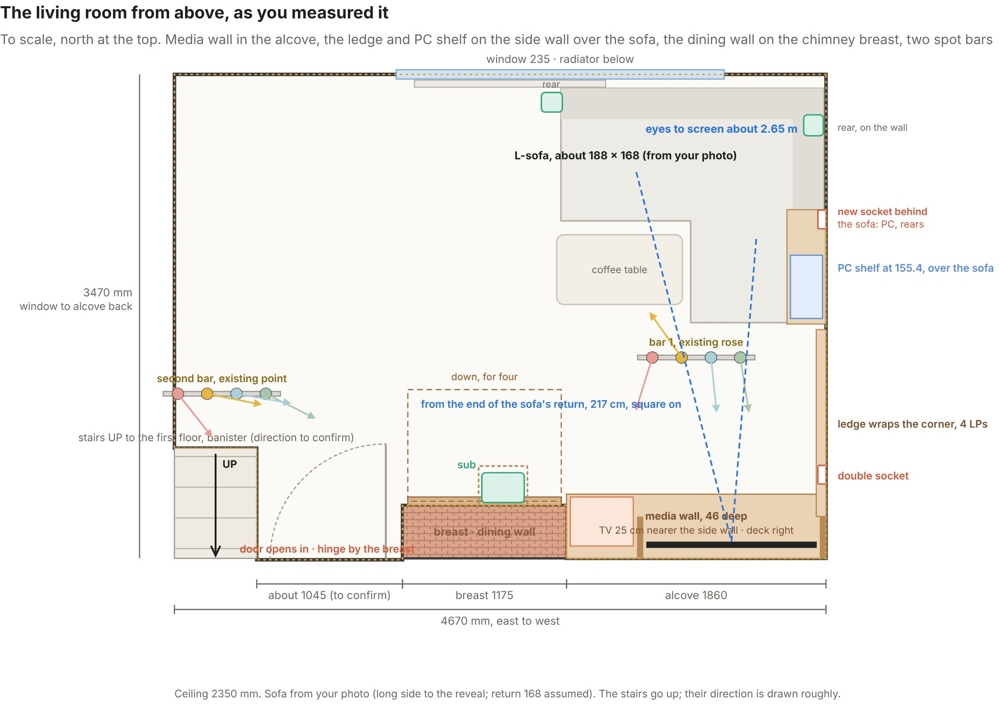
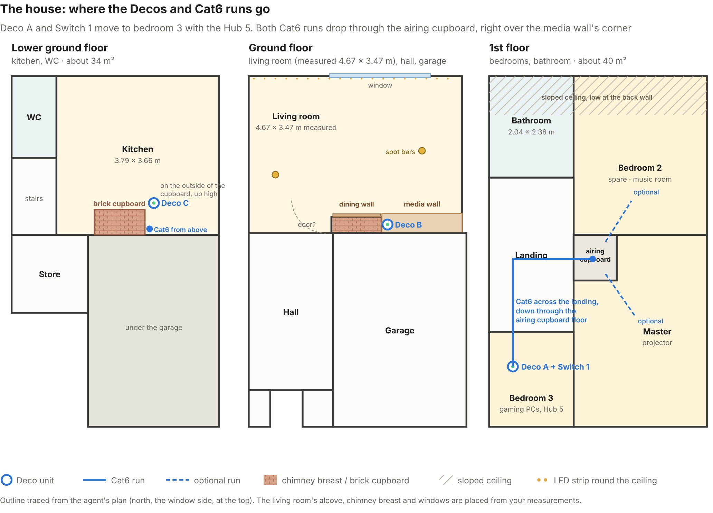

Media Wall v10
The artisan oak build in Farrow & Ball Card Room Green, now drawn to the room as you measured it. Compare it with the slat wall, try the other greens, or turn on the numbered key.
Coming next, v11: the TV moves 25 cm towards the side wall so the turntable fits in the alcove (Series X on a shelf above it, records in the drawers below), the record ledge wraps round onto the side wall above the L-sofa, a fold-down oak dining table goes on the chimney breast, and a second spotlight bar hangs by the stairs. This page updates in place when it's drawn.
What changed in v10: the alcove is 186 × 38 cm with a 235 cm ceiling, not 225 × 50 × 220. The TV, the Series X and three bays still fit; a turntable doesn't, so the deck, the LP browser and both record trays move into a matching oak cabinet against the chimney breast.
Heights, from the floor
- 235Ceiling, as measured
- 196High shelf: books up to 30 cm, a box, a print, Deco B
- 156Side shelves · record ledge at 155.4
- 130Chimney breast kept clear to here for the deck's lid
- 116.5TV centre, LG C6 55in on its stand
- 76Oak worktop and the vinyl cabinet's top
- 9Plinth under the two BESTÅ bays
In the wall
- Alcove: the TV between two oak uprights, the Series X on its fan stand to the left, three 60 cm bays below for the Xbox consoles, the PlayStations and the sub.
- Vinyl cabinet, 100 × 44 × 76 cm: two face-out record trays, a singles drawer and a preamp cubby, with the deck and the LP browser on top.
- Fit proof: 34 of 39 checks fit outright against published sizes; the Series X's sides are tight, and the RetroTINK and the door get a check on site.
- Power: the socket on the side wall in front of bay 1 becomes a double; Deco B runs from an always-on socket via the groove behind the right upright.
Lighting
- The LED strip you have now, on the ceiling round the whole room, facing down.
- A four-head cone spotlight bar on the existing rose, Wolston style: sage and blue on the shelves and ledge, mustard on the coffee table, pink on the vinyl corner. None at the TV.
- LED grooves in the oak uprights and a bias light behind the TV.
The living room and the house


The living room is drawn from your measurements; the house outline is traced from the agent's plans. Deco A and Switch 1 sit in bedroom 3 with the Hub 5, and both Cat6 runs drop through the airing cupboard, right over the media wall's corner.
Downloads
- The full plan, v10 (PDF, 34 pages)
- House plan - Decos and Cat6
- Living room plan - as measured
- Media wall v10 - artisan oak - Card Room Green (HD)
- Media wall v10 - artisan oak - heights and widths (HD)
- Media wall v10 - artisan oak - numbered key (HD)
- Media wall v10 - slat wall alternative - numbered key
- Media wall v10 - slat wall alternative
- Paint options - four greens
- Skirting options with Card Room Green


The PDF and the full-resolution renders, straight from the project folder. This page and the Claude viewer update together each round.